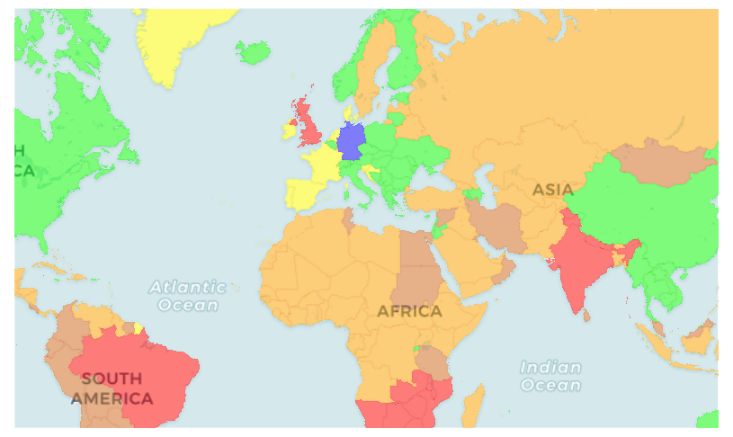

HISTORICAL ARCHIVE
Corona
Atlas
International
COVID-19 risk areas
Project discontinued · No current travel guidance
Historical classifications: RKI
© OpenStreetMap contributors · © CARTO · EuroGeographics